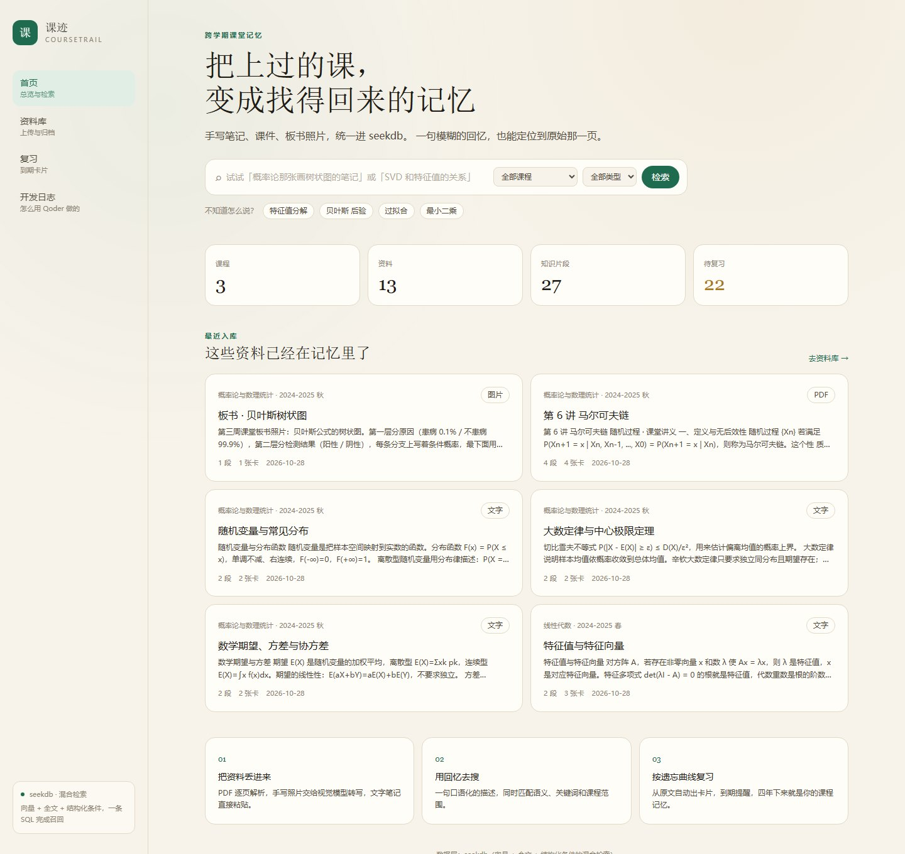
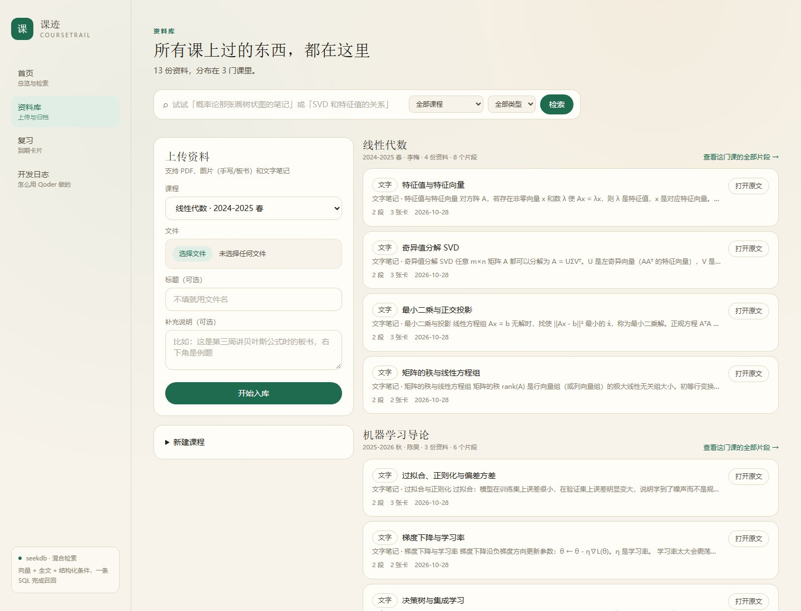
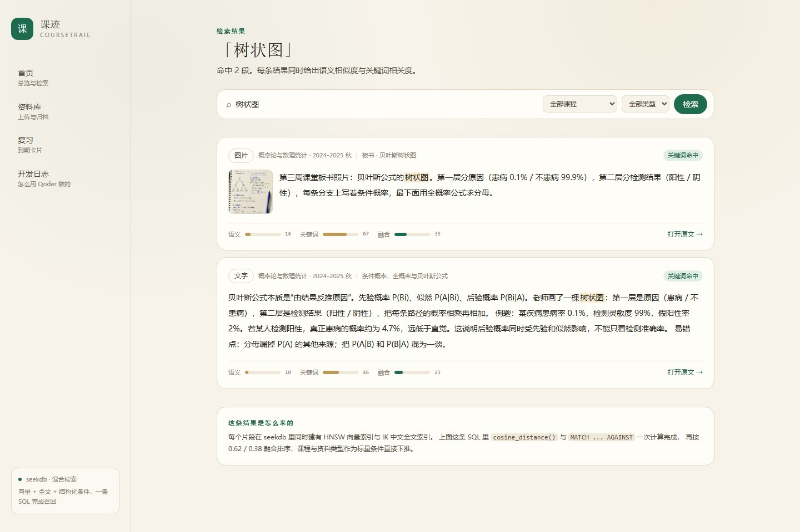
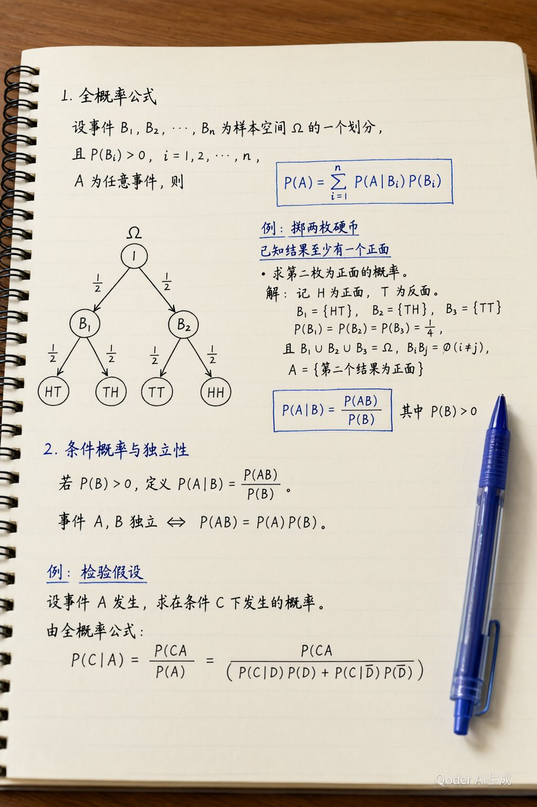
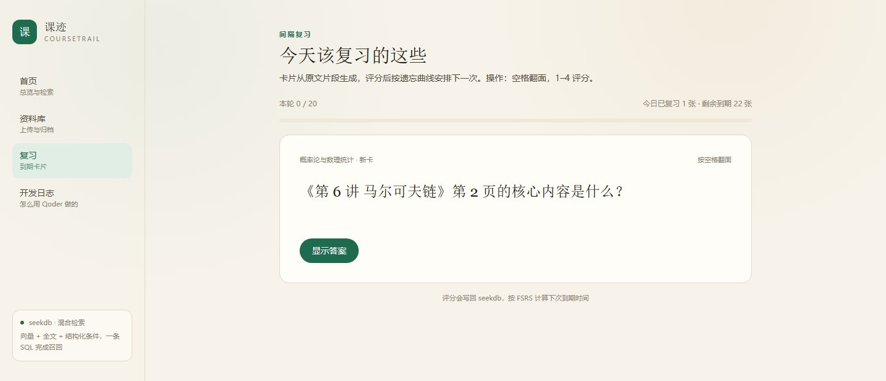

记不清
只记得老师画过一张树状图，却想不起是哪门课、第几页、当时怎么讲的。
Qoder 比赛作品 · 学习提效
手写笔记、课件、板书照片，统一进 seekdb。一句模糊的回忆，也能定位到原始那一页； 再从原文生成复习卡，按遗忘曲线安排下一次。
在线实例使用示例课程数据，可自由检索、上传与复习；若无法访问，按下方步骤本地启动。

为什么做这个
笔记存在文件夹里，回忆却存在脑子里。两者对不上，就会重复经历同一件事：翻半小时， 最后还是凭印象重学一遍。
只记得老师画过一张树状图，却想不起是哪门课、第几页、当时怎么讲的。
关键词搜不出照片里的板书；纯向量又对公式名、方法名、缩写不敏感。
划过的重点不会自己回来。不知道今天该看哪一段，也不知道下次什么时候再看。
把每一份资料切成带出处的片段，同时建向量索引和中文全文索引；检索时两种信号一起算， 再把命中的片段变成复习卡。找得到，也接得住。
功能
PDF 逐页解析并保留页码；板书照片可以交给视觉模型转写成文字；文字笔记直接粘贴。 原始文件全部保留，随时能回到出处。

余弦距离与中文全文相关度在同一条查询里计算，按 0.62 / 0.38 融合； 课程、资料类型作为标量条件直接下推，不用在应用层拼三个库的结果。

结果卡片带着课程、资料名和页码。点开就是原始那一页，不用再在文件夹和相册之间来回找。

片段生成问答卡，四档评分后由 FSRS 计算下次到期时间。评分记录写回 seekdb， 复习进度和卡片状态都留在同一个数据层里。

技术架构
资料、片段、向量、全文索引、复习状态都在同一个库里。检索不需要跨服务拼装， 入库和复习也不需要第二套存储。
页面、上传、检索编排、复习排期。没有独立的 Python 服务，一个进程跑完。
MySQL 协议直连，单表同时挂 HNSW 向量索引和 IK 全文索引，事务写入片段与卡片。
OpenAI 兼容的 embedding、视觉与对话接口。不配置时自动降级，功能不中断。
SELECT * FROM (
SELECT c.id, c.content, c.page_no,
cosine_distance(c.embedding, ?) AS dist,
MATCH(c.content) AGAINST(?) AS rel
FROM chunks c
JOIN materials m ON m.id = c.material_id
JOIN courses co ON co.id = c.course_id
WHERE c.course_id = ?
) t
ORDER BY 0.62 * (CASE WHEN t.dist < 1 THEN 1 - t.dist ELSE 0 END)
+ 0.38 * (CASE WHEN t.rel >= 0.6 THEN t.rel / (t.rel + 1) ELSE 0 END) DESC
LIMIT ?;为什么要融合：纯全文会把「贝叶斯」拆到无关片段，纯向量又找不到精确术语。 示例库里第一版排序召回了 15 条，其中 13 条是弱关键词噪声；加上阈值后同一查询只剩 2 条真正相关。
示例数据与评测
| 检索方式 | 命中率 |
|---|---|
| 纯向量 | 95.5% (21/22) |
| 纯全文 | 100% (22/22) |
| 混合检索 | 100% (22/22) |
22 条关键词级基准（自动标注），用 npm run eval 复现。
语料较小时三种方式都接近上限；本地哈希向量下语义项偏弱，接入 bge-m3 后对比才有意义。
这张表用于回归，不用来证明优越性。
另含一份 2 页讲义 PDF 与一张板书照片，用于验证页码溯源与图片检索。
开发日志
开发全程在 Qoder 内完成：需求拆解、建表、入库管线、检索 SQL、页面与调试。人负责选型判断和验收。
对比四个方向后选了学生场景；主动去掉 PowerContext，只保留 seekdb，少一个服务就少一类故障。
逐条确认 IK 中文分词、COSINE 向量索引、cosine_distance() 可用之后，才开始生成 schema。
相关度阈值 + 句子边界切块，解决「弱关键词混进前排」和「片段从半句话开始」两个问题。
Tailwind 缺 PostCSS 配置导致整站无样式；pdfjs v5 没有 destroy()；文件接口的流式返回拖垮 Turbopack worker。
上传 PDF 与图片、检索命中、打开原文、评分顺延到期时间；tsc、eslint、next build 全部通过。
本地体验
这个页面是静态展示；应用本体需要本地 Docker 与 seekdb，因为检索与复习状态都在数据库里。 示例课程已内置，启动后即可上传、检索和复习。
前置：Node.js 20+ 与 Docker。首次启动 seekdb 需要拉取镜像。
docker compose up -d
npm install
npm run db:init
npm run db:seed
npm run dev代码仓库：github.com/Pureiriss/coursetrail · 验证样例：docs/verification.md
可选：在 .env.local 填入 OpenAI 兼容的 embedding / 视觉 / 对话接口，
即可启用手写转写与更好的语义召回；不配置也能完整运行。